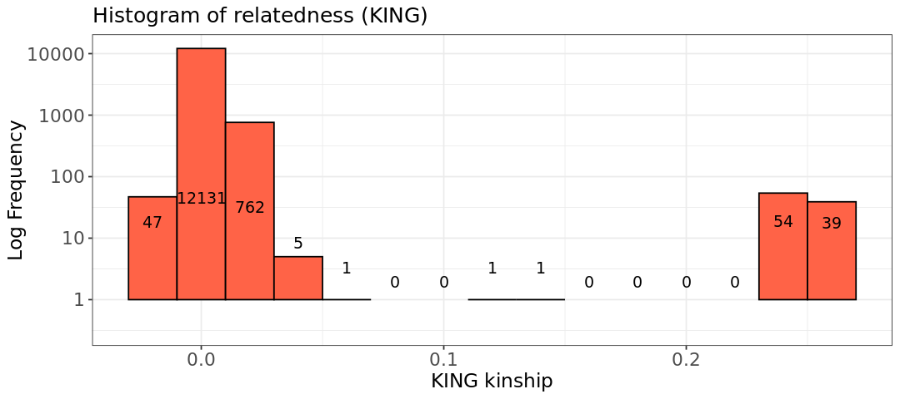
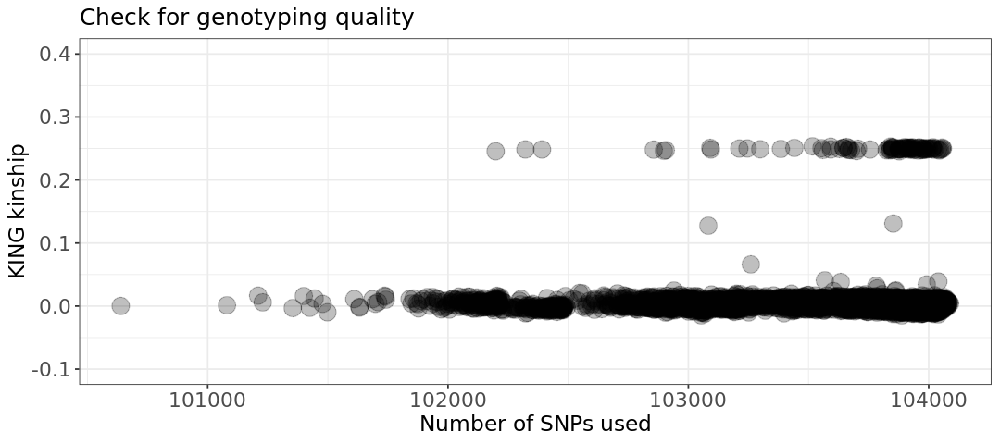

ln -sf ../Data
mkdir -p Results/GWAS4Quality Control: Relatedness
Important notes for this notebook
As we have already mentioned, quality control (QC) analyses are crucial to ensure the reliability and validity of the results. In this section, we will explore relatedness, exploring some ways of estimating it, and how it can be used to check suality of the data.
Learning outcomes
- Discuss Identity by descent and its estimators in PLINK and PLINK2
- Detect and categorize related individuals
- Identify and speculate what can cause unusual relatedness
How to make this notebook work
In this notebook, we will both use R and bash command line programming languages. Remember to change the kernel whenever you transition from one language to the other (Kernel --> Change Kernel) indicated by the languages’ images. * We will first run Bash commands.
 Choose the Bash kernel
Choose the Bash kernel
Relatedness refers to the presence of genetically related individuals in a study sample, which can introduce confounding factors into association analyses. Since most statistical methods assume that samples are independent, including related individuals, like siblings, violates this assumption. Addressing relatedness is crucial as a quality control step to ensure that genomes in the dataset are no more similar than expected for unrelated individuals. This process is essential to preserve the validity of the study’s findings.
While all humans share some genetic relatedness, the degree of relatedness varies among individuals. In genome-wide association studies (GWAS), these variations must be accounted for to avoid biasing the statistical associations between genotypes and phenotypes. Cryptic relatedness (genetic relatedness of individuals not expected to be in a family relationship) can interfere with the association analysis (Voight and Pritchard 2005).
In a family-based study (e.g., parent-offspring), you do not need to remove related pairs, but the statistical analysis should account for family relatedness. However, for a population-based study, we suggest using the KING estimator (Manichaikul et al. 2010) with a threshold of 0.06.
Differently from the IBD estimator (called pi_hat \(\hat{\pi}\)), which assumes that individuals come from homogeneous population, KING derives a kinship estimate for a pair of individuals without reference to the population allele frequencies. Instead, it gets the relatedness information from the difference between the counts of loci where both individuals are heterozygotes and counts of loci where they are different homozygotes, normalized by the sum of the heterozygous loci of the individuals. This makes KING robust to population structure and useful to check genotyping quality.
Thus, values for KING are
- 0.25 for parent-child or full siblings: they share exactly 50% of their alleles by descent (IBD). For full siblings it can vary slightly (e.g. recombination events).
- 0.125 for half siblings: they have 25% IBD (one parent is common).
- 0.065 for 1st cousins: IBD is 12.5% since they share one set of grandparents and not parents.
KING values need to be multiplied by 2 to match the corresponding IBD probability

We use ln -sf to link the data folder and create a directory for output files.
Analysis with PLINK
We will use the set of independent SNPs (generated in the previous section) and the --make-king-table option in PLINK2 for our analysis, so that we generate pairwise KING estimators. Note that we use version 2 of PLINK because this one has implemented the KING estimator.
The HapMap dataset is known to contain parent-offspring relationships. We will check the KING estimator values and exclude all individuals above a chosen threshold (to remove at least related individuals).
plink2 --bfile Results/GWAS3/HapMap_3_r3_7 \
--extract Results/GWAS3/indepSNP.prune.in --make-king-table \
--out Results/GWAS4/KINGPLINK v2.00a5.12LM 64-bit Intel (25 Jun 2024) www.cog-genomics.org/plink/2.0/
(C) 2005-2024 Shaun Purcell, Christopher Chang GNU General Public License v3
Logging to Results/GWAS4/KING.log.
Options in effect:
--bfile Results/GWAS3/HapMap_3_r3_7
--extract Results/GWAS3/indepSNP.prune.in
--make-king-table
--out Results/GWAS4/KING
Start time: Thu Mar 27 14:51:56 2025
385567 MiB RAM detected, ~345797 available; reserving 192783 MiB for main
workspace.
Using up to 64 threads (change this with --threads).
162 samples (84 females, 78 males; 110 founders) loaded from
Results/GWAS3/HapMap_3_r3_7.fam.
1073226 variants loaded from Results/GWAS3/HapMap_3_r3_7.bim.
1 binary phenotype loaded (55 cases, 55 controls).
--extract: 104144 variants remaining.
104144 variants remaining after main filters.
--make-king-table pass 1/1: Scanning for rare variants... done.
0 variants handled by initial scan (104144 remaining).
--make-king-table pass 1/1: Writing... done.
--make-king-table: 104144 variants processed.
Results written to Results/GWAS4/KING.kin0 .
End time: Thu Mar 27 14:51:56 2025The table from PLINK2 contains various things:
FID1: Family ID of the first individual.IID1: Individual ID of the first individual.FID2: Family ID of the second individual.IID2: Individual ID of the second individual.NSNP: The number of SNPs used to calculate the kinship between the two individuals.HETHET: The number of heterozygous sites used in the kinship calculation (often useful for checking genotyping quality).IBS0: The number of identical-by-state (IBS) 0 SNPs, which are variants where the two individuals do not share the same allele.KINSHIP: The kinship coefficient (or pihat) between the two individuals, which is the proportion of alleles shared by descent.
Stop - Read - Solve
- What assumption in association studies is violated when individuals are related?
- How would you recognize if the same sample is duplicated in your dataset?
- Are there closely related individuals? How many individuals show close relatedness (
KING > 0.2)? - What relationships are found by PLINK?
# Write your code here (add more cells if needed)
Solution
- If you have related individuals, you will lose the independence of individuals at each SNP. This is a problem because many models used in GWAS analysis do not include handling family relationships.
- Calculating the KING coefficient and looking for a value close to 0.5.
- We will look for unique values in column 8 (
KINSHIP), rounding to two decimals - We will examine
KINSHIPvalues in column 8.
Let’s print the first few rows of KING.kin0 and then, the unique relatioship categories in the file:
cat Results/GWAS4/KING.kin0 | head -5#FID1 IID1 FID2 IID2 NSNP HETHET IBS0 KINSHIP
1377 NA11891 1328 NA06989 102744 0.145137 0.0716636 -0.000291294
1349 NA11843 1328 NA06989 103838 0.144485 0.0722183 -0.000769168
1349 NA11843 1377 NA11891 102899 0.143996 0.0717208 -0.00128099
1330 NA12341 1328 NA06989 103595 0.148086 0.0705439 0.00763385Now, let’s calculate how many samples are in a pair with KING KINSHIP parameter (column 8) larger than 0.06, 0.12, 0.2 (to account for small variations in relevant thresholds). Note that the file contains one individual of a pair, so some samples might be shown many times. Thus we make those samples unique.
awk '{ if ($8 > 0.06) print $2}' Results/GWAS4/KING.kin0 | sort | uniq | wc -l79awk '{ if ($8 > 0.12) print $2}' Results/GWAS4/KING.kin0 | sort | uniq | wc -l79awk '{ if ($8 > 0.2) print $2}' Results/GWAS4/KING.kin0 | sort | uniq | wc -l79echo There are $(awk '{ if ($8 > 0.2) print $2}' Results/GWAS4/KING.kin0 | sort | uniq | wc -l) individuals with KINSHIP larger than all thresholds. So we might have lots of half siblings, cousins and siblings mixed in the data.There are 79 individuals with KINSHIP larger than all thresholds. So we might have lots of half siblings, cousins and siblings mixed in the data.There are potentially some family ties!
 Switch to the R-GWAS kernel.
Switch to the R-GWAS kernel.
Stop - Read - Solve
Write some R code to calculate the summary of the distribution of KINSHIP values. What do you observe?
hint: use the hist() command.
# Write your code here
Solution
We read in the matrix with the KING kinship values
# Generate a plot to assess the type of relationship.
suppressMessages(suppressWarnings(library(ggplot2)))
options(repr.plot.width = 9, repr.plot.height = 4)
# Read data into R
relatedness <- read.table("Results/GWAS4/KING.kin0", header=TRUE, comment.char = '|')
head(relatedness)| X.FID1 | IID1 | FID2 | IID2 | NSNP | HETHET | IBS0 | KINSHIP | |
|---|---|---|---|---|---|---|---|---|
| <int> | <chr> | <int> | <chr> | <int> | <dbl> | <dbl> | <dbl> | |
| 1 | 1377 | NA11891 | 1328 | NA06989 | 102744 | 0.145137 | 0.0716636 | -0.000291294 |
| 2 | 1349 | NA11843 | 1328 | NA06989 | 103838 | 0.144485 | 0.0722183 | -0.000769168 |
| 3 | 1349 | NA11843 | 1377 | NA11891 | 102899 | 0.143996 | 0.0717208 | -0.001280990 |
| 4 | 1330 | NA12341 | 1328 | NA06989 | 103595 | 0.148086 | 0.0705439 | 0.007633850 |
| 5 | 1330 | NA12341 | 1377 | NA11891 | 102654 | 0.146999 | 0.0707328 | 0.002741300 |
| 6 | 1330 | NA12341 | 1349 | NA11843 | 103753 | 0.147205 | 0.0718533 | 0.001988400 |
Now we look at how many pairs have specific relatedness values. You can see there are around 100 pairs of cousins/half siblings/siblings. Those correspond to the 76 unique samples observed before.
hist.king <- ggplot(relatedness, aes(x=relatedness[,8])) +
geom_histogram(binwidth = 0.02, col = "black", fill="tomato") +
labs(title = "Histogram of relatedness (KING)") +
xlab("KING kinship") +
ylab("Log Frequency") +
theme_bw() +
scale_y_log10() +
theme(axis.title=element_text(size=14),
axis.text=element_text(size=13),
plot.title=element_text(size=15))
#Extract coordinates of the plot
bin_data <- ggplot_build(hist.king)$data[[1]]
#Adding text labels to each bar,
#accounting for log scale
hist.king +
geom_text(data = bin_data,
aes(x = xmin + (xmax - xmin) / 2,
y = log10(count+1), # Apply log10
label = count),
vjust = -5, #Vertical adjustment of text
size = 4,
color = "black")Warning message in scale_y_log10(): “log-10 transformation introduced infinite values.” Warning message in scale_y_log10(): “log-10 transformation introduced infinite values.” Warning message in scale_y_log10(): “log-10 transformation introduced infinite values.” Warning message: “Removed 6 rows containing missing values or values outside the scale range (`geom_bar()`).”

We can also plot the number of SNPs used to calculate relatedness VS the KING relatedness itself. Pairs with very low number of SNPs and anomalous KING estimator might simply contain badly genotyped sample(s). This is not at all our case.
# Relatedness plot
plot.relatedness <- ggplot(relatedness) +
geom_point(aes(x=NSNP, y=KINSHIP), size=5, alpha=.25) +
ylim(-.1,.4) +
labs(x = "Number of SNPs used", y = "KING kinship", title = "Check for genotyping quality") +
theme_bw() +
theme(axis.title=element_text(size=14),
axis.text=element_text(size=13),
legend.text= element_text(size=13),
legend.title=element_text(size=14),
plot.title=element_text(size=15))
show(plot.relatedness)
Stop - Read - Solve
Use PLINK options to filter out related individuals, using a relatedness threshold of 0.1.
First of all you need to create a file with the IDs of the samples to remove. You can use the command
awkas we did before in this exercise.Afterwards you need PLINK with the option
--removeto use the file with IDs. Name the output--out Results/GWAS4/king_exercise.
 Switch to the Bash kernel.
Switch to the Bash kernel.
# Write your code here (PLINK command)
Solution
We use awk to print IDs to remove and then the option --remove of PLINK.
 We print out all family and sample IDs for which the column KINSHIP (column 8) is >0.1. Note we print both samples in the pair with high relatedness, using the
We print out all family and sample IDs for which the column KINSHIP (column 8) is >0.1. Note we print both samples in the pair with high relatedness, using the awk command twice.
awk '{ if ($8 > 0.1) print $1, $2 }' Results/GWAS4/KING.kin0 > Results/GWAS4/filter_king.txtNow each sample is identified uniquely ba family and sample ID. Some samples are repeated more than once because we have selected the first sample in related pairs, so same samples appear more than once. We use the option --remove to produce a new set of plink files. We will be warned about sample repetitions because we have been having some duplicates from the KINSHIP pairs
plink --bfile Results/GWAS3/HapMap_3_r3_7 \
--make-bed \
--remove Results/GWAS4/filter_king.txt \
--out Results/GWAS4/king_exercisePLINK v1.90b6.21 64-bit (19 Oct 2020) www.cog-genomics.org/plink/1.9/
(C) 2005-2020 Shaun Purcell, Christopher Chang GNU General Public License v3
Logging to Results/GWAS4/king_exercise.log.
Options in effect:
--bfile Results/GWAS3/HapMap_3_r3_7
--make-bed
--out Results/GWAS4/king_exercise
--remove Results/GWAS4/filter_king.txt
385567 MB RAM detected; reserving 192783 MB for main workspace.
1073226 variants loaded from .bim file.
162 people (78 males, 84 females) loaded from .fam.
110 phenotype values loaded from .fam.
--remove: 84 people remaining.
Warning: At least 17 duplicate IDs in --remove file.
Using 1 thread (no multithreaded calculations invoked).
Before main variant filters, 65 founders and 19 nonfounders present.
Calculating allele frequencies... done.
Total genotyping rate in remaining samples is 0.997556.
1073226 variants and 84 people pass filters and QC.
Among remaining phenotypes, 33 are cases and 32 are controls. (19 phenotypes
are missing.)
--make-bed to Results/GWAS4/king_exercise.bed + Results/GWAS4/king_exercise.bim
+ Results/GWAS4/king_exercise.fam ... done.Let’s grab from the log file what we have left of the data. grep finds a specific word in a text file.
grep people Results/GWAS4/king_exercise.log162 people (78 males, 84 females) loaded from .fam. --remove: 84 people remaining. 1073226 variants and 84 people pass filters and QC.
 Switch to the Bash kernel.
Switch to the Bash kernel.
So far, you’ve learned how to filter individuals using KING kinship thresholds. Now, we’ll demonstrate that most of the relatedness was due to parent-offspring relationships. We will achieve this by using the --filter-founders option to create a new filtered dataset that includes only the founders (individuals without listed parents in the data). This generates .bed, .bim, and .fam files, which are then used to create a .kin0 file containing relatedness values. Note again we use plink2 to create the KING matrix.
plink --bfile Results/GWAS3/HapMap_3_r3_7 \
--filter-founders \
--make-bed \
--out Results/GWAS4/HapMap_3_r3_8 \
--silent
plink2 --bfile Results/GWAS4/HapMap_3_r3_8 \
--extract Results/GWAS3/indepSNP.prune.in \
--make-king-table \
--out Results/GWAS4/KING_foundersPLINK v2.00a5.12LM 64-bit Intel (25 Jun 2024) www.cog-genomics.org/plink/2.0/
(C) 2005-2024 Shaun Purcell, Christopher Chang GNU General Public License v3
Logging to Results/GWAS4/KING_founders.log.
Options in effect:
--bfile Results/GWAS4/HapMap_3_r3_8
--extract Results/GWAS3/indepSNP.prune.in
--make-king-table
--out Results/GWAS4/KING_founders
Start time: Thu Mar 27 14:57:13 2025
385567 MiB RAM detected, ~343124 available; reserving 192783 MiB for main
workspace.
Using up to 64 threads (change this with --threads).
110 samples (55 females, 55 males; 110 founders) loaded from
Results/GWAS4/HapMap_3_r3_8.fam.
1073226 variants loaded from Results/GWAS4/HapMap_3_r3_8.bim.
1 binary phenotype loaded (55 cases, 55 controls).
--extract: 104144 variants remaining.
104144 variants remaining after main filters.
--make-king-table pass 1/1: Scanning for rare variants... done.
0 variants handled by initial scan (104144 remaining).
--make-king-table pass 1/1: Writing... done.
--make-king-table: 104144 variants processed.
Results written to Results/GWAS4/KING_founders.kin0 .
End time: Thu Mar 27 14:57:14 2025 Switch to the R kernel.
Switch to the R kernel.
Let’s plot the results from the KING_founders.kin0 file. We can see how there is only 1 pair with high kinship amongst the founders.
suppressMessages(suppressWarnings(library(ggplot2)))
relatedness <- read.table("Results/GWAS4/KING_founders.kin0", header=TRUE, comment.char = '|')
hist.king <- ggplot(relatedness, aes(x=relatedness[,8])) +
geom_histogram(binwidth = 0.02, col = "black", fill="tomato") +
labs(title = "Histogram of relatedness (KING) in founders-only data") +
xlab("KING kinship") +
ylab("Log Frequency") +
theme_bw() +
scale_y_log10() +
theme(axis.title=element_text(size=14),
axis.text=element_text(size=13),
plot.title=element_text(size=15))
#Extract coordinates of the plot
bin_data <- ggplot_build(hist.king)$data[[1]]
#Adding text labels to each bar,
#accounting for log scale
hist.king +
geom_text(data = bin_data,
aes(x = xmin + (xmax - xmin) / 2,
y = log10(count+1), # Apply log10
label = count),
vjust = -10, #Vertical adjustment of text
size = 4,
color = "black")Warning message in scale_y_log10(): “log-10 transformation introduced infinite values.” Warning message in scale_y_log10(): “log-10 transformation introduced infinite values.” Warning message in scale_y_log10(): “log-10 transformation introduced infinite values.” Warning message: “Removed 9 rows containing missing values or values outside the scale range (`geom_bar()`).”
Stop - Read - Solve
- 1. Do you observe anything unexpected in the plot?
- 2. Can you identify the IIDs of the sample pair? Hint: filter for KINSHIP values.
- 3. Based on the KINSHIP, what is the most likely relationship between the pair?
- 4. What would you do about it? Hint: remove one or both in the pair?
# Write your answer here# R code here
Solution
- 1. The file
KING_founders.kin0shows that, after excluding all non-founders, one individual pair removed in the exercise remains in the HapMap data. - 2. Below, we can look at the individual from the table by setting KINSHIP > 0.2. Even if labeled as unrelated, it has high relatedness. The IIDs of the pair are NA07045 and NA12813.
relatedness[relatedness$KINSHIP > 0.2,]| X.FID1 | IID1 | FID2 | IID2 | NSNP | HETHET | IBS0 | KINSHIP | |
|---|---|---|---|---|---|---|---|---|
| <int> | <chr> | <int> | <chr> | <int> | <dbl> | <dbl> | <dbl> | |
| 2729 | 1454 | NA12813 | 13291 | NA07045 | 103668 | 0.21402 | 0.0186171 | 0.247858 |
- 3. This remaining individual is likely to be related with sibling relationship, even though they were not given the same family identity (FID) in the HapMap data.
- 4. We don’t need to remove both individuals from the dataset (IID1=NA07045; IID2=NA12813). It’s enough to remove just one, and the individual with the highest missing rate (lowest quality) could be chosen. Let’s calculate the missing rates using PLINK.
 Switch to the Bash kernel.
Switch to the Bash kernel.
plink --bfile Results/GWAS4/HapMap_3_r3_8 \
--missing \
--out Results/GWAS4/HapMap_3_r3_8 \
--silentThen, find the two individuals from the output file using grep and sorting descendingly by missing rate (EZ, column 6)
# Let's look at the output
cat Results/GWAS4/HapMap_3_r3_8.imiss | grep -E 'NA07045|NA12813' | sort -k6,6nr 13291 NA07045 N 2552 1073226 0.002378
1454 NA12813 N 1947 1073226 0.001814NA07045 is the individual to be removed. Once this is removed, their offspring can still be used in analyses that don’t involve trios, such as family-related studies.
Stop - Read - Solve
- Plot the distribution of missing rates from
HapMap_3_r3_8. What is the value forNA07045? - Remove
NA07045from the PLINK files
Hint:
- Use the
.imissfile to plot a histogram of the missing scores from the fileHapMap_3_r3_8.imissinR(check previous notebooks for help). Is the score ofNA07045amongst the higher/lower ones? You can add a vertical line in the histogram representing the value forNA07045usinggeom_vline. - Create a file with the sample ID to remove and use the
--removeoption in PLINK.
 Switch to the R kernel.
Switch to the R kernel.
# Write your code here
Solution
We can extract the column from the file and observe in the histogram that the individual NA07045 has a missing rate closer to the bulk of other samples.
suppressMessages(suppressWarnings(library(ggplot2)))
options(repr.plot.width = 9, repr.plot.height = 4)
# Read data into R
smiss <- read.table("Results/GWAS4/HapMap_3_r3_8.imiss", header=T)
head(smiss)
hist.relatedness <- ggplot(data=smiss, aes(F_MISS)) +
geom_histogram(col = "black", fill = "tomato") +
geom_vline(xintercept = 0.002384, color = "red", linetype = "dashed", linewidth = 1) +
labs(title = "Histogram of missing rates") +
xlab("Missing rate") +
ylab("Frequency") +
theme_bw() +
theme(axis.title=element_text(size=14), axis.text=element_text(size=13),plot.title=element_text(size=15))
show(hist.relatedness)| FID | IID | MISS_PHENO | N_MISS | N_GENO | F_MISS | |
|---|---|---|---|---|---|---|
| <int> | <chr> | <chr> | <int> | <int> | <dbl> | |
| 1 | 1328 | NA06989 | N | 2181 | 1073226 | 0.0020320 |
| 2 | 1377 | NA11891 | N | 13586 | 1073226 | 0.0126600 |
| 3 | 1349 | NA11843 | N | 813 | 1073226 | 0.0007575 |
| 4 | 1330 | NA12341 | N | 3697 | 1073226 | 0.0034450 |
| 5 | 1328 | NA06984 | N | 6478 | 1073226 | 0.0060360 |
| 6 | 1418 | NA12275 | N | 2717 | 1073226 | 0.0025320 |
`stat_bin()` using `bins = 30`. Pick better value with `binwidth`.
 Switch to the Bash kernel.
Switch to the Bash kernel.
To remove the individual from the data, we create a file containing its number and ID, and provide it to PLINK with the option --remove
echo "13291 NA07045" > Results/GWAS4/id_remove.txtplink --bfile Results/GWAS4/HapMap_3_r3_8 \
--remove Results/GWAS4/id_remove.txt \
--make-bed \
--out Results/GWAS4/HapMap_3_r3_9 \
--silent
Challenge yourself: relatedness in mice data
Use the mice data you filtered in the exercise of GWAS3, or if you do not have it, use the initial mice data.
1 - Calculate the kinship matrix and plot the values on the histogram.
2 - Why do you get those values in the plot? What could be happening? Remember those are mice!
3 - Now try instead to use plink with the option --genome. This calculates the IBD estimator called pi_hat. You need --bfile for the input data and --out for the name of the output table.
4 - Plot again the histogram using the table (column PI_HAT). Now you should have values bounded between (0,1) on the x axis.
5 - Values around 0.25 are second-degree relationships (half siblings), around 0.5 are parent-child and siblings. Usually, a pi_hat much above 0.5 is trace of duplicates, or inbreeding (the second is likely our case, or we would have really bad data with too many duplicates). We have also some sample pairs with a pi_hat=1. What could the respective samples be?
#Write your code here or create a copy of this notebook to work on
Click to view answers
Wrapping up
You have now successfully checked your data for relatedness. You filtered out the individuals with high relatedness and can continue in the next notebook to check population structure.
In the next notebook on Association Testing, you will need the following files from the folder Results/GWAS4/: - HapMap_3_r3_10 (the bfile, i.e., HapMap_3_r3_10.bed, HapMap_3_r3_10.bim, and HapMap_3_r3_10.fam) - covar_mds.txt which are the HapMap data and the MDS covariates highlighting the population stratification. Those are already available once you have been running this notebook.
Below is a cheat sheet of our new methods from this notebook. Again, it is important to remember that each method of QC should be justified, which will depend on the nature of the feature you are trying to analyze.
| Step | Command | Function | Thresholds and explanation |
|---|---|---|---|
| 6: Relatedness | --make-king-table (PLINK2) |
Calculates KING kinship of all sample pairs. The KING kinship is more reliable in presence of population structure. | Use independent SNPs (pruning) for this analysis and limit it to autosomal chromosomes only. |
| - | --genome (PLINK) |
Calculates the pi_hat IBD estimator of all sample pairs. It is made to be bound between 0 and 1, but can in some extreme cases go out of this interval. It can be useful as a second check when having very weird KING values ((see our mice exercise)[exercise/gwas4-mice.ipynb]). | Use independent SNPs (pruning) for this analysis and limit it to autosomal chromosomes only. |
| - | awk + --remove |
Sets threshold and creates a list of individuals with relatedness above the chosen threshold (awk command). This means that subjects who are related at, for example, KINSHIP > 0.1 (i.e., half siblings, or siblings, or parent-child) can be detected, or PI_HAT>.25 (matching the mentioned KING relationships). |
Cryptic relatedness can interfere with the association analysis. If you have a family‐based sample (e.g., parent‐offspring), you do not need to remove related pairs but the statistical analysis should take family relatedness into account. However, for a population-based sample, we suggest using a KINSHIP threshold of 0.06, which is in line with the literature using IBD kinship thresholds (Anderson et al., 2010; Guo et al., 2014). |
Bibliography
Manichaikul, Ani, Josyf C. Mychaleckyj, Stephen S. Rich, Kathy Daly, Michèle Sale, and Wei-Min Chen. 2010. “Robust Relationship Inference in Genome-Wide Association Studies.” Bioinformatics 26 (22): 2867–73. https://doi.org/10.1093/bioinformatics/btq559.
Voight, Benjamin F, and Jonathan K Pritchard. 2005. “Confounding from Cryptic Relatedness in Case-Control Association Studies.” PLoS Genetics 1 (3): e32.
Copyright
CC-BY-SA 4.0 license